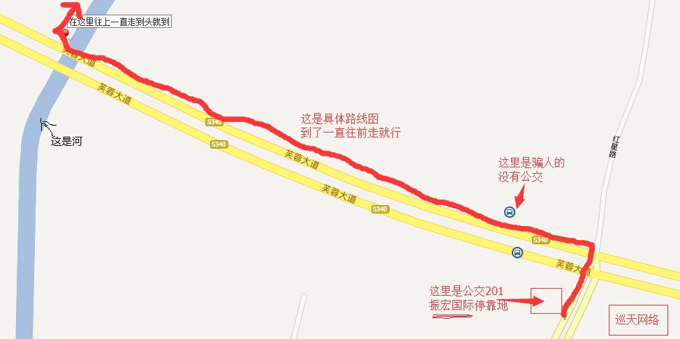

邀请您参加 盛永根 和 陈静 的婚礼
时间：
2014-3-22（周日）
地址：江苏省无锡市江阴市 华士镇 华西9村 万安桥112号
联系人：新郎：盛永根 新娘： 陈静
手机号：新郎：
13552416883
新娘:
18612759103
中餐和晚餐，在自家办
交通路线
自驾路线：
地图导航搜索 ： 无锡市（空格）振宏国际
百度地图：
http://j.map.baidu.com/rrPg0
高德地图：
http://amap.com/014mBB
火车路线：
方案1. 到无锡站下车，在旁边无锡客运站买到 华士 的票即可。
方案2. 到无锡东站下车，在旁边客运站坐车到张家港即可。
汽车路线：
买票到江阴市客运站下车，出站后，西南方向200米处有很多公交车，坐201路公交到振宏国际站点下车即可。
具体的路线图，红色箭头位置，一直走到头就到
